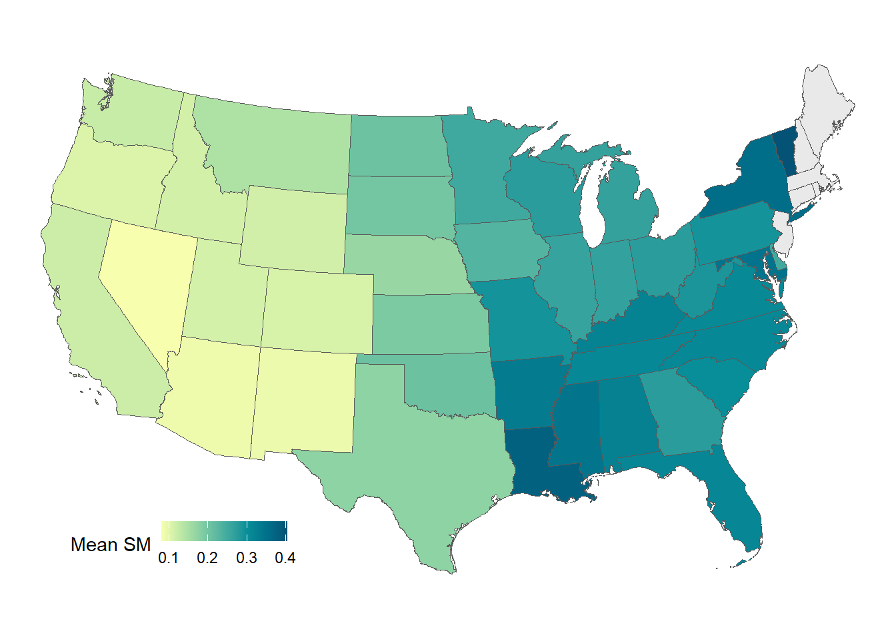

Chapter 6 Parallel computation for geospatial analysis
Many computations in R can be made faster by the use of parallel computation. Generally, parallel computation is the simultaneous execution of different pieces of a larger computation across multiple computing processors or cores. The basic idea is that if you can execute a computation in X seconds on a single processor, then you should be able to execute it in X/n seconds on n processors.
Such a speed-up might not possible because of overhead and various barriers to splitting up a problem into n pieces, but it is often possible to come close in simple problems. For more details read: https://www.linkedin.com/pulse/thinking-parallel-high-performance-computing-hpc-debasish-mishra.
library(parallel)
SMAPBrk=rast("./SampleData-master/SMAP_L3_USA.nc")
plot(mean(SMAPBrk, na.rm=TRUE), asp=NA)
6.1 Cellwise implimentation of functions
6.1.1 Apply custom function to pixel time series
Once we have imported the NetCDF file as SpatRaster, we wil apply a slightly modified version of previously used function my_fun for calculating mean, variance and skewness for time series data for each cell in parallel. We will use terra::app function to apply my_fun on SpatRaster in parallel.
Expert Note: For seamless implementation of function in parallel mode, care must be taken that all necessary are accessible to ALL cores and error exceptions are handles appropriately. We will modify my_fun slightly to highlight what it means in practice.
- We will convert input
xto a numeric array - We will remove
NAvalues from dataset before calculation - We will use
minSampto fix minimum sample counts for calculation - We will use
tryCatchto handle error exceptions
The basic rules to avoid errors: (a) checking that inputs are correct, (b) avoiding non-standard evaluation, and (c) avoiding functions that can return different types of output.
#~~ We will make some changes in the custom function for mean, variance and skewness
minSamp = 50 # Minimum assured samples for statistics
my_fun = function(x, minSamp, na.rm=TRUE){
smTS=as.numeric(as.vector(x)) # Convert dataset to numeric array
smTS=as.numeric(na.omit(smTS)) # Omit NA values
# Implement function with trycatch for catching exception
tryCatch(if(length(smTS)>minSamp) { # Apply minimum sample filter
######## OPERATION BEGINS #############
meanVal=mean(smTS, na.rm=TRUE) # Mean
varVal=var(smTS, na.rm=TRUE) # Variance
skewVal=moments::skewness(smTS, na.rm=TRUE) # Skewness
output=c(meanVal,varVal,skewVal) # Combine all statistics
return(output) # Return output
######## OPERATION ENDS #############
} else {
return(rep(NA,3)) # If conditions !=TRUE, return array with NA
},error =function(e){return(rep(NA, 3))}) # If Error== TRUE, return array with NA
}
# Load the package
library(tictoc)
# Apply function to all grids in parallel
tic()
stat_brk = app(SMAPBrk,
my_fun,
minSamp = 50, # Minimum assured samples for statistics
cores =parallel::detectCores() - 1) # Leave one core for housekeeping
names(stat_brk)=c("Mean", "Variance", "Skewness") # Add layer names
toc()## 4.34 sec elapsed
6.1.2 Best practices for large-scale operations
Error handling is the art of debugging unexpected problems in your code. One easy solution when looping through customized functions is to include print() messages after each major operation which can help indicate where the error might be happening. Furthermore when dealing with large spatial data:
- Try parallel operation on a smaller region before submitting large jobs to HPRC. Pixel-wise implementation of the function can help identify errors in the code. Convert the cropped region into a data frame and apply function to time series of each cell. If your code throws error, troubleshoot carefully for the series which generates the error.
library(terra)
e <- ext( c(-110,-108, 35,37) ) # Sample 2X2 degree domain
p <- as.polygons(e)
crs(p) <- "EPSG:4326"
# Use this polygon to crop and mask the larger SpatRaster- Use
tryCatchcarefully as it may suppress legitimate errors as well, generating spurious results. Test the codes for smaller region withouttryCatchto test the robustness of your codes.
Expert Note: Parallel computing may have some overheads upon creation and closing of clusters. A significant improvement in computing times using parallel techniques would be visible for large jobs.
6.2 Layerwise implimentation of functions
6.2.1 Data cubes as lists
We will convert Spatraster to a list of rasters and then we will apply my_fun to each element of the list in parallel using future_lapply.
# Convert Spatraster to a list of rasters
rasList=as.list(SMAPBrk[[1:10]]) #What will happen if we pass rast(rasList)?
length(rasList)## [1] 10my_fun = function(x){
x=na.omit(as.numeric(as.vector(x))) # Create vector of numeric values of SpatRaster
meanVal=base::mean(x, na.rm=TRUE) # Mean
varVal=stats::var(x, na.rm=TRUE) # Variance
skewVal=moments::skewness(x, na.rm=TRUE) # Skewness
output=c(meanVal,varVal,skewVal) # Combine all statistics
return(output) # Return output
}
# Test the function for one raster
my_fun(rasList[[2]])## [1] 0.16793509 0.01222349 0.95460532# Apply function in parallel for all layers
library(parallel)
library(future.apply)
# A multicore future: employ max core-1 for processing
plan(multicore, workers = detectCores() - 1)
# Deploy function in parallel
tic()
outStat= future_lapply(rasList, my_fun)
toc()## 23.37 sec elapsed6.2.2 Blockwise summary of feature extracted data
In this section we will use a shapefile to extract cell values from a SpatRaster as a list using exact_extract. Summary statistics will be calculated in parallel using my_fun for dataset for each feature.

Expert Note: Function exactextractr::exact_extract is faster and more suited for large applications compared to terra::extract. Although both perform similar operation with little changes in output format
#~ Extract feature data as data frame
library(exactextractr)
library(sf)
library(sp)
featureData=exact_extract(SMAPBrk, # Raster brick
st_as_sf(conus), # Convert shapefile to sf (simple feature)
force_df = FALSE, # Output as a data.frame?
include_xy = FALSE, # Include cell lat-long in output?
fun = NULL, # Specify the function to apply for each feature extracted data
progress = TRUE) # Progressbar## | | | 0% | |= | 2% | |=== | 4% | |==== | 6% | |====== | 8% | |======= | 10% | |========= | 12% | |========== | 14% | |=========== | 16% | |============= | 18% | |============== | 20% | |================ | 22% | |================= | 24% | |=================== | 27% | |==================== | 29% | |===================== | 31% | |======================= | 33% | |======================== | 35% | |========================== | 37% | |=========================== | 39% | |============================= | 41% | |============================== | 43% | |=============================== | 45% | |================================= | 47% | |================================== | 49% | |==================================== | 51% | |===================================== | 53% | |======================================= | 55% | |======================================== | 57% | |========================================= | 59% | |=========================================== | 61% | |============================================ | 63% | |============================================== | 65% | |=============================================== | 67% | |================================================= | 69% | |================================================== | 71% | |=================================================== | 73% | |===================================================== | 76% | |====================================================== | 78% | |======================================================== | 80% | |========================================================= | 82% | |=========================================================== | 84% | |============================================================ | 86% | |============================================================= | 88% | |=============================================================== | 90% | |================================================================ | 92% | |================================================================== | 94% | |=================================================================== | 96% | |===================================================================== | 98% | |======================================================================| 100%## [1] 49## [1] 5# View(featureData[[5]]) # View the extracted data frame
nrow(featureData[[5]]) # No. pixels within selected feature## [1] 694Each row in featureData[[5]] is the time series of cell values which fall within the boundary of feature number 5, i.e. Texas. Since exact_extract function provides coverage_fraction for each pixel in the output, we will make some minor change in the my_fun function to remove this variable before calculating the statistics.
# Extract SM time series for first pixel by removing percentage fraction
cellTS=as.numeric(featureData[[5]][1,1:nlyr(SMAPBrk)])
# Plot time time series for the selected feature
plot(cellTS, type="l", xlab="Time", ylab="Soil moisture")
#~~ We will make another small change in the custom function for mean, variance and skewness
minSamp=50 # Minimum assured samples for statistics
my_fun = function(x, na.rm=TRUE){
xDF=data.frame(x) # Convert list to data frame
xDF=xDF[ , !(names(xDF) %in% 'coverage_fraction')] # Remove coverage_fraction column
xData=as.vector(as.matrix(xDF)) # Convert data.frame to 1-D matrix
smTS=as.numeric(na.omit(xData)) # Omit NA values
# Implement function with trycatch for catching exception
tryCatch(if(length(smTS)>minSamp) { # Apply minimum sample filter
######## OPERATION BEGINS #############
meanVal=mean(smTS, na.rm=TRUE) # Mean
varVal=var(smTS, na.rm=TRUE) # Variance
skewVal=moments::skewness(smTS, na.rm=TRUE) # Skewness
output=c(meanVal,varVal,skewVal) # Combine all statistics
return(output) # Return output
######## OPERATION ENDS #############
} else {
return(rep(NA,3)) # If conditions !=TRUE, return array with NA
},error =function(e){return(rep(NA, 3))}) # If Error== TRUE, return array with NA
}Let’s apply my_fun to extracted data for each feature.
The multiprocess option in the future package has been deprecated, and you should replace it with multisession for safe cross‑platform parallelization on Windows.
It is generally recommended to use between 2 and 4 workers on Windows systems to ensure that parallel processing functions run smoothly and avoid stability issues.
## [1] 0.1727930 0.0095579 0.9876028# Apply function in parallel for all layers
library(parallel)
library(snow)
library(future.apply)
library(future)
# Cross-platform safe option (works everywhere)
plan(multisession, workers = 4)outStat <- future_lapply(featureData, my_fun)
# Test output for one feature
outStat[[5]] # Is this the same as before?## [1] 0.1727930 0.0095579 0.9876028# Extract each summary stats for all features from the output list
FeatureMean=sapply(outStat,"[[",1) # Extract mean for all features
FeatureVar=sapply(outStat,"[[",2) # Extract variance for all features
FeatureSkew=sapply(outStat,"[[",3) # Extract skewness for all features
# Let's place mean statistics as an attribute to the shapefile
conus$meanSM=FeatureMean# Plot mean soil moisture map for CONUS
library(rcartocolor)
library(ggplot2)
library(sf)
library(sp)
mean_map=ggplot() +
geom_sf(data = st_as_sf(conus), # CONUS shp as sf object (simple feature)
aes(fill = meanSM)) + # Plot fill color= mean soil moisture
scale_fill_carto_c(palette = "BluYl", # Using carto color palette
name = "Mean SM", # Legend name
na.value = "#e9e9e9", # Fill values for NA
direction = 1)+ # To invert color, use -1
coord_sf(crs = 2163)+ # Reprojecting polygon 4326 or 3083
theme_void() + # Plot theme. Try: theme_bw
theme(legend.position = c(0.2, 0.1),
legend.direction = "horizontal",
legend.key.width = unit(5, "mm"),
legend.key.height = unit(4, "mm"))
mean_map
For more information on parallel computing, check out the chapter: https://vinit-sehgal.github.io/AGRO4092/ch9.html